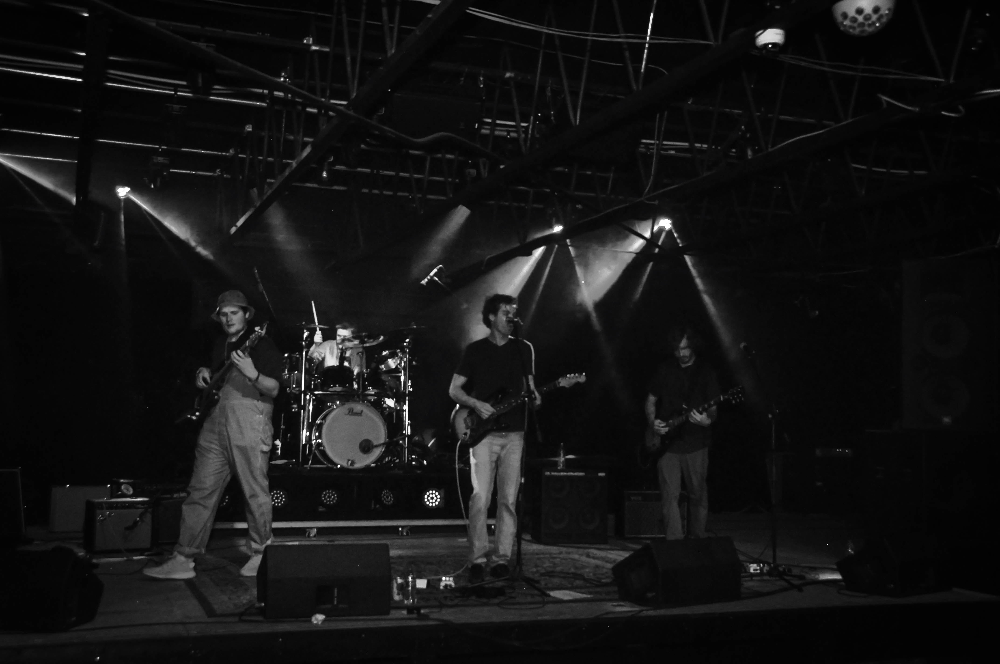

Music and Bands
Just Another Mountain Band
Just Another Mountain Band (JAMB) is a progessive blues group from Boulder, Colorado. Chris Pearson (lead guitar, backing vocals) and Jonny Ernster (lead vocals, rhythm guitar) met back in 2009 while college students. Both began to write songs together, polishing off tracks over time; Chris provided much of the music, while Jonny worked on lyrics. After nearly 10 years, Chris and Jonny were introduced by a mutual friend to August George (bass) and myself (drums). From tht moment, Just Another Mountain Band was born. August and myself provided additional songwriting expertise and contributed more tracks. We currently in the process of recording an album; in the meantime, check out our SoundCloud for some demos.
My Music
Here are a couple of tracks I've worked on
Grynn
A track I recently reworked for a class final project. I'll be shocked if you make it through all 18 minuites. Needs a bit more work with some of my sounds, and I'm not sure the tune really needs that ginormous ambient ending.
Divern
My entry for CU's annual 64 Bit Music Competition. I didn't make it far. I wrote the main riff back in 2018, one of the first things I ever worked on. It has a lot of promise, I'll probably expand upon it in some time.
Lato
A simple track, and another class project. One of the earliest tunes I've written.